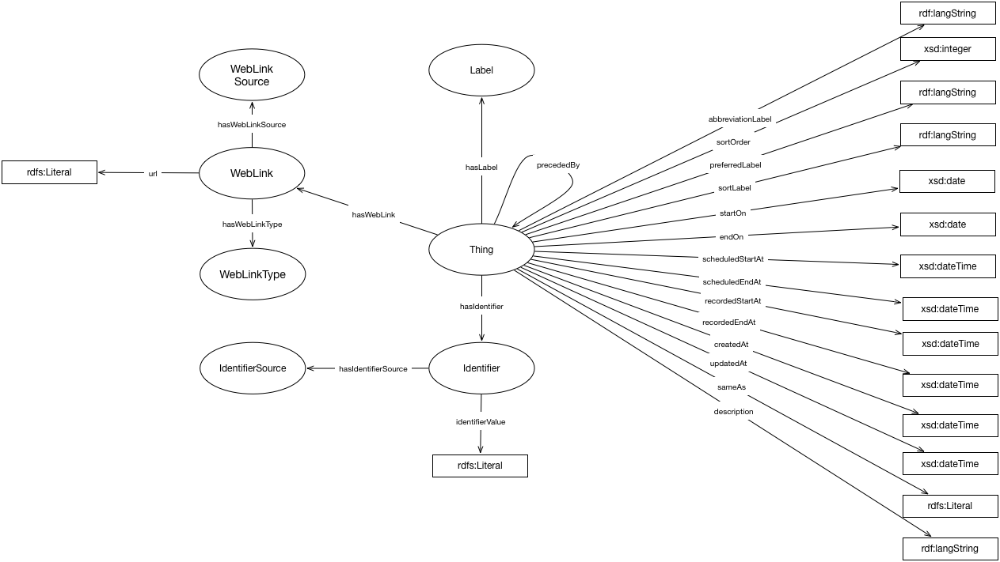

IRI: http://parliament.uk/ontologies/utility/Identifier
IRI: http://parliament.uk/ontologies/utility/IdentifierSource
IRI: http://parliament.uk/ontologies/utility/Label
IRI: http://parliament.uk/ontologies/utility/Thing
IRI: http://parliament.uk/ontologies/utility/WebLink
IRI: http://parliament.uk/ontologies/utility/WebLinkSource
IRI: http://parliament.uk/ontologies/utility/WebLinkType
IRI: http://parliament.uk/ontologies/utility/hasIdentifier
IRI: http://parliament.uk/ontologies/utility/hasIdentifierSource
IRI: http://parliament.uk/ontologies/utility/hasLabel
IRI: http://parliament.uk/ontologies/utility/hasWebLink
IRI: http://parliament.uk/ontologies/utility/hasWebLinkSource
IRI: http://parliament.uk/ontologies/utility/hasWebLinkType
IRI: http://parliament.uk/ontologies/utility/precededBy
IRI: http://parliament.uk/ontologies/utility/abbreviationLabel
IRI: http://parliament.uk/ontologies/utility/createdAt
IRI: http://parliament.uk/ontologies/utility/description
IRI: http://parliament.uk/ontologies/utility/endOn
IRI: http://parliament.uk/ontologies/utility/identifierValue
IRI: http://parliament.uk/ontologies/utility/preferredLabel
IRI: http://parliament.uk/ontologies/utility/recordedEndAt
IRI: http://parliament.uk/ontologies/utility/recordedStartAt
IRI: http://parliament.uk/ontologies/utility/sameAs
IRI: http://parliament.uk/ontologies/utility/scheduledEndAt
IRI: http://parliament.uk/ontologies/utility/scheduledStartAt
IRI: http://parliament.uk/ontologies/utility/sortLabel
IRI: http://parliament.uk/ontologies/utility/sortOrder
IRI: http://parliament.uk/ontologies/utility/startOn
IRI: http://parliament.uk/ontologies/utility/updatedAt
IRI: http://parliament.uk/ontologies/utility/url
This HTML document was obtained by processing the OWL ontology source code through LODE, Live OWL Documentation Environment, developed by Silvio Peroni.